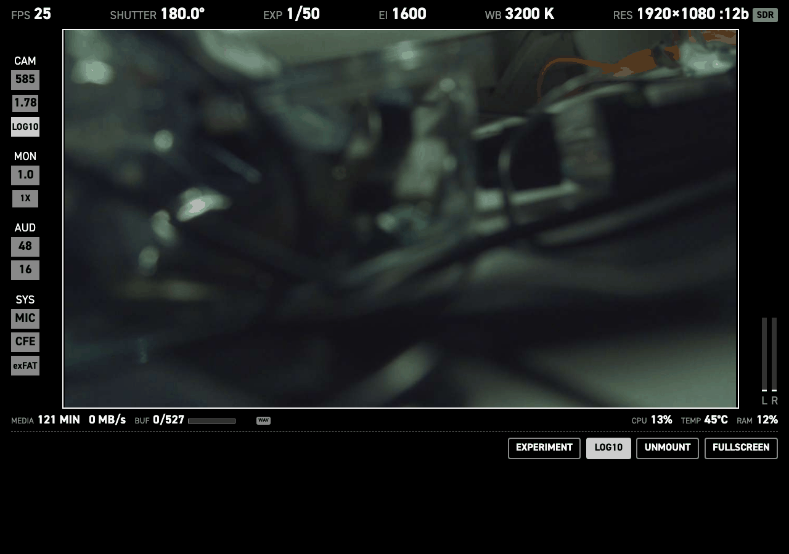
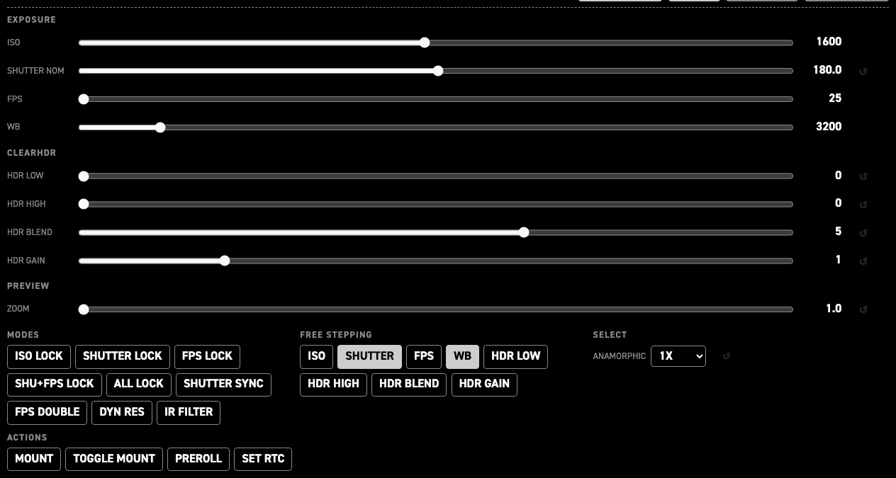

Web GUI#
You can reach the web interface on http://cinepi.local:5000/, or http://10.42.0.1:5000/.

A clean preview stream lives on port 8000 (http://cinepi.local:8000), and on 8001 for a second sensor. The control UI stays on port 5000.
To record, tap the preview image. Camera settings (iso, shutter, fps, white balance and resolution can be changed by clicking the setting in the top row.
By clicking the EXPERIMENT button you can access all camera settings. This can be useful when experimenting and planninng your build. The changes here are temporary. The values for the sliders are defined in the settings tab.
Most settings steps are defined in the settings file. You can also set a camera setting to free step. This allows you to select all values between the lowest and the highest in the settings array, with increments defined by the user. this can be useful for exploring what kind of array you want to be easily accessible in you physical build, for example via rotary encoders.

| Group | Controls | What it is for |
|---|---|---|
EXPOSURE |
ISO, SHUTTER NOM, FPS, WB |
Basic image capture settings |
CLEARHDR |
HDR LOW, HDR HIGH, HDR BLEND, HDR GAIN — four sliders |
Only on a sensor with ClearHDR modes. The raw level below which the sensor reads pure HG and the one above which it reads pure LG (0–4095 each), the HG:LG mix inside the transition zone (0–8), and the digital gain on the low-gain path (0–5). They only do something while a ClearHDR mode is selected. See ClearHDR. |
PREVIEW |
ZOOM — one slider |
Digital preview zoom across the whole configured span — the ends of hdmi_display.preview.zoom_steps in 0.1 steps, 1.0–2.0 as shipped — not just the cycle-able stops. Monitoring only. See Digital zoom. |
MODES |
ISO LOCK, SHUTTER LOCK, FPS LOCK, SHU+FPS LOCK, ALL LOCK, SHUTTER SYNC, FPS DOUBLE, DYN RES, IR FILTER — nine toggles |
The camera's mode flags. Each lights while its parameter is on, so the row doubles as a state readout. |
FREE STEPPING |
ISO, SHUTTER, FPS, WB, HDR LOW, HDR HIGH, HDR BLEND, HDR GAIN — eight toggles |
Swaps a parameter's step table in settings.jsonc for continuous stepping in units of its free_increment. |
SELECT |
ANAMORPHIC, HDMI PREVIEW |
Anamorphic desqueeze (the factors configured in settings.jsonc; 1X / 1.33X / 2X as shipped), and the HDMI preview source on a dual-sensor rig: BOTH (side by side), CAM0, CAM1, PIP_CAM0, PIP_CAM1. |
ACTIONS |
MOUNT, TOGGLE MOUNT, PREROLL — three buttons |
One-shot commands with no state: mount storage, mount-or-unmount, run the storage pre-roll warm-up clip. Setting the RTC moved to the settings editor's i2c pane, which shows both clocks and checks the write. |